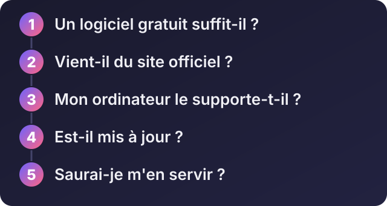
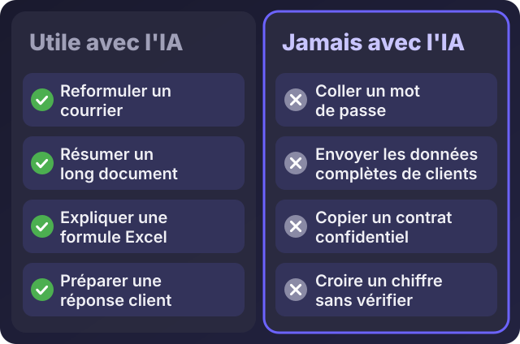

Accueil / Blog / Informatique au quotidien
Informatique au quotidienQuels logiciels pour quelle activité ? Les recommandations, et comment les coupler à l'IA

Écouter cet article · environ 5 min
« Quel logiciel pour faire ça ? » est la question qui revient le plus quand on équipe un ordinateur. Il existe des milliers de choix, beaucoup de copies dangereuses, et très peu de gens pour vous dire honnêtement ce qui suffit. Voici ma liste de logiciels fiables, tous disponibles sur le site de leur éditeur, puis comment les coupler à l'intelligence artificielle sans vous mettre en danger.
Comment choisir

- Un logiciel gratuit suffit-il ? Souvent oui. Ne payez que ce dont vous avez vraiment besoin.
- Vient-il du site officiel ? Jamais d'un site de téléchargement tiers, qui ajoute parfois des programmes indésirables.
- Mon ordinateur le supporte-t-il ? Un ordinateur modeste a besoin d'outils légers.
- Est-il mis à jour ? Un logiciel abandonné devient une faille de sécurité.
- Saurai-je m'en servir ? Le meilleur logiciel est celui que vous utiliserez vraiment.
Pour tout le monde
- Navigateur : Firefox, Chrome ou Edge. Gardez-en un à jour et n'installez que les extensions dont vous avez besoin.
- Fichiers compressés : 7-Zip, gratuit, pour ouvrir ZIP, RAR et autres.
- Lecteur de vidéos : VLC, gratuit, lit presque tout.
- Mots de passe : Bitwarden, avec une offre gratuite.
- Protection : Windows Sécurité, déjà inclus (voir l'article sur l'antivirus).
Bureautique et gestion
- Textes, tableaux, présentations : LibreOffice, gratuit et complet, ou Microsoft 365 si vous échangez beaucoup de fichiers avec des partenaires qui l'utilisent. Google Docs et Sheets marchent dans le navigateur et se partagent facilement : c'est ce que j'utilise pour des suivis de factures et de commandes.
- Comptabilité et facturation : le bon choix dépend de votre activité et de vos obligations. Avant d'acheter, demandez conseil : c'est un domaine où une erreur coûte cher.
- Réunions à distance : Google Meet, Zoom ou WhatsApp, selon ce que vos interlocuteurs utilisent déjà.
Création, image, son et vidéo
- Visuels simples : Canva, dans le navigateur, pour des affiches et des publications.
- Retouche d'image : GIMP, gratuit.
- Son : Audacity, gratuit, pour enregistrer et nettoyer une voix.
- Montage vidéo : DaVinci Resolve a une version gratuite très complète, mais demande un ordinateur puissant ; CapCut est plus léger.
Développement
- Éditeur de code : Visual Studio Code, gratuit.
- Serveur de test local : XAMPP, pour essayer un site PHP sur son ordinateur.
- Versions du code : Git et GitHub, pour garder l'historique et ne rien perdre.
Prise en main à distance : une règle
Des outils comme AnyDesk, TeamViewer ou RustDesk permettent à un technicien de prendre la main sur votre ordinateur pour vous aider. Mais ils sont aussi utilisés par des arnaqueurs qui prétendent être un « support ». N'acceptez une prise en main que d'une personne que vous avez contactée vous-même, et fermez la session à la fin.
Les coupler à l'IA
Les assistants d'intelligence artificielle (ChatGPT, Claude, Gemini, Copilot) deviennent un outil de bureau comme un autre. Voici des usages utiles :
- Rédiger et reformuler : un courrier, une réponse à un client, une annonce.
- Résumer un long document ou un compte rendu.
- Expliquer une formule de tableur, ou en proposer une à partir de ce que vous voulez calculer.
- Traduire et corriger un texte.
- Préparer un plan, une trame de présentation, des idées de publications.
- Aider à programmer : expliquer une erreur, proposer un morceau de code, que vous relisez avant de l'utiliser.

Quelques règles pour s'en servir sans risque :
- Ne collez jamais de mot de passe, de code bancaire, de contrat confidentiel ni de liste complète de clients dans un assistant en ligne : ce que vous envoyez quitte votre ordinateur.
- Vérifiez les chiffres, les dates et les noms. L'IA se trompe, et elle le fait avec assurance.
- Relisez avant d'envoyer. Elle écrit bien, mais ne connaît pas votre contexte ni vos clients.
- Utilisez-la comme un assistant, pas comme un décideur.
Quand demander de l'aide
Vous ne savez pas quoi installer pour votre activité ? Votre ordinateur est lent après l'installation ? Vous voulez équiper plusieurs postes de la même manière ? Un expert peut choisir, installer, configurer et former votre équipe, pour que tout soit prêt et sûr dès le premier jour.
Décrivez-moi votre activité sur WhatsApp : je vous donne une liste adaptée, courte, avec uniquement ce dont vous avez besoin.